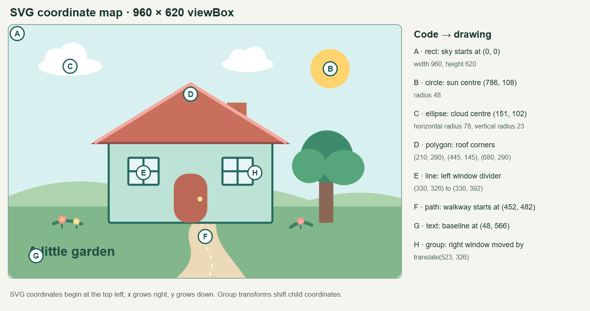

Exercise 4.1 · Garden Cottage
A house and garden drawn with SVG shapes and coordinates.

Step 5 · The SVG and DOM screenshot will be added after inspecting this new drawing in the browser.
A house and garden drawn with SVG shapes and coordinates.

Step 5 · The SVG and DOM screenshot will be added after inspecting this new drawing in the browser.